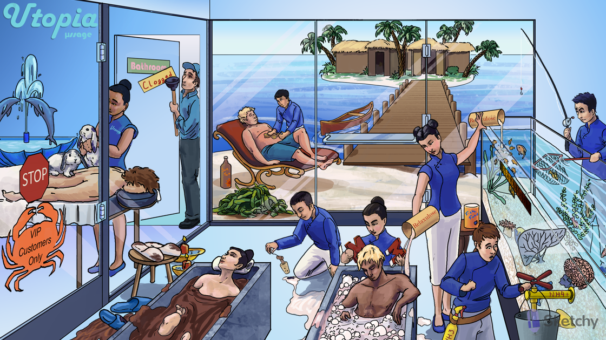

Spa water: osmotic laxatives (e.g. magnesium compounds, lactulose, polyethylene glycol) are nonabsorbable substances that draw water into the intestinal lumen → distention → peristalsis
Magnets: magnesium compounds (e.g. magnesium hydroxide, magnesium citrate) are osmotic laxatives
Peg drain cover: polyethylene glycol (PEG) is an osmotic laxative (nonabsorbable sugar)
Relaxulose: lactulose is an osmotic laxative (nonabsorbable sugar)
Relaxulose into the liver and brain coral tank: lactulose is useful in the treatment of hepatic encephalopathy
Cirrhotic liver and brain coral: hepatic encephalopathy (a neurologic complication of cirrhosis due to the buildup of ammonia and other toxins)
Fish eating lactulose: intestinal bacteria metabolize lactulose into acidic metabolites
Acidic pH meter: acidic metabolites decrease the pH of the intestinal lumen
NH4+ release valve: ammonia (NH3) is trapped as ammonium (NH4+) in the acidic intestinal lumen and excreted
Fisherman removing fish: rifaximin (a poorly absorbed antibiotic) eradicates ammonia producing intestinal bacteria (treats hepatic encephalopathy)
Spilling mud bath: laxatives can cause diarrhea and dehydration
Bulky seaweed: psyllium is a bulk-forming laxative (indigestible hydrophilic colloid → absorbs water → distention → peristalsis)
Water penetrating canoe at the DOCK: docusate is a stool softener (surfactant agent that facilitates penetration of stool by water and lipids)
Stimulating suntan lotion: senna is a stimulant laxative a.k.a cathartic (stimulation of enteric nervous system and colonic secretions)
Brown gut: chronic use of senna causes melanosis coli (brown pigmentation of the colon)
Muddy slippers left outside: antidiarrheal agents (featured in massage room)
Utopia: opioid agonists (e.g. diphenoxylate, loperamide) treat diarrhea
μssage: opioids treat diarrhea by activating μ-opioid receptors in the GI tract
Lop-eared rabbit: loperamide treats diarrhea (μ-opioid agonist that does not cross the BBB → no analgesia or potential for addiction)
Lop-eared rabbit hopping back and forth: opioid agonists (e.g. loperamide) increase colonic phasic segmenting activity → increased colonic transit time
Dolphins: diphenoxylate treats diarrhea (μ-opioid agonist with some ability to cross the BBB → combined with atropine to prevent abuse)
Red stool and inflammatory candles outside door: antidiarrheal agents are contraindicated in patients with bloody diarrhea or fever
Clogged: opioids can cause constipation
VIP CUSTOMERS only crab: VIPoma and carcinoid tumor cause secretory diarrhea
Octagon stop sign: octreotide (a somatostatin analog) treats the symptoms of VIPoma and carcinoid syndrome (e.g. secretory diarrhea)